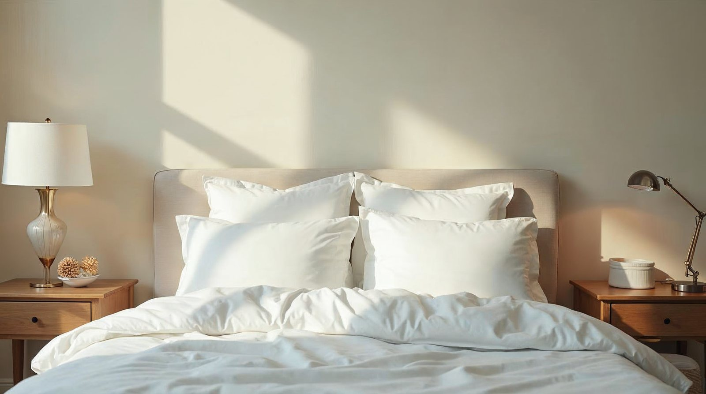
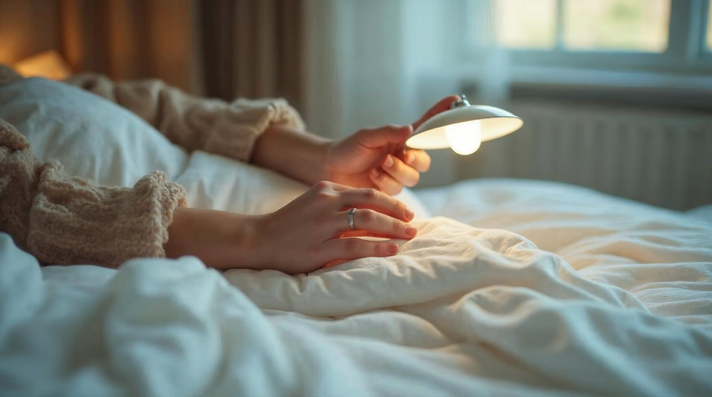
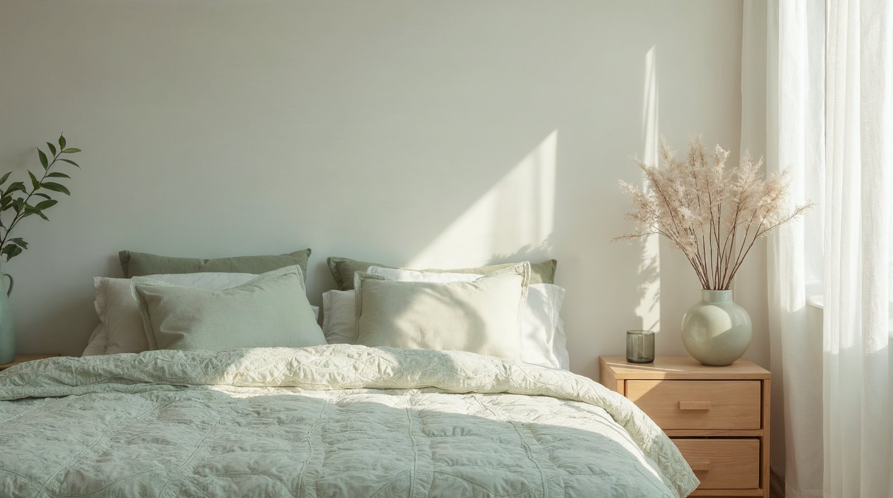
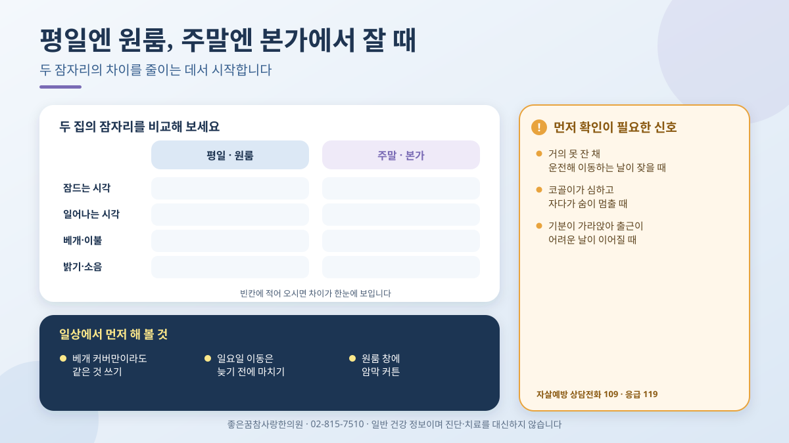

이종호 한의사 감수좋은꿈참사랑한의원 대표원장 (한의사 면허번호 19769)발행 2026-11-24 · 수정 2026-11-26
이 글의 차례
- 왜 이런 불편이 생길 수 있나요
- 왜 일요일 밤에 유독 잠이 안 올까요?
- 잠자리가 바뀐 탓일까요, 원래 있던 불면일까요?
- 먼저 이렇게 여쭙니다
- 일상에서 먼저 해 볼 수 있는 것
- 두 집 잠자리, 무엇부터 맞춰 볼까요?
- 금요일 밤부터 월요일 아침까지, 이렇게 흘러가 보세요
- 상황별 예시
- 본가에서 보내는 저녁 시간은 어떻게 조절할까요?
- 이동하는 날 식사와 속은 어떻게 챙길까요?
- 스스로 점검해 보세요
- 혼자 지내는 평일 저녁은 어떻게 보내면 좋을까요?
- 한의원에서 함께 살필 수 있는 경우
- 첫 방문에서는 이런 순서로 이야기를 나눕니다
- 얼마나 지켜보고 언제 상담할까요
- 이렇게 기록해 오시면 상담이 쉬워집니다
- 마치며
- 이런 증상은 먼저 확인이 필요합니다
- 함께 읽으면 좋은 글
두 집의 잠자리를 최대한 비슷하게 맞추고 일어나는 시각을 일정하게 두면 집이 바뀌어도 잠이 덜 흔들릴 수 있습니다. 어느 한 집이 문제라기보다 두 집 사이를 오가는 이틀의 흐름이 잠을 흔드는 경우가 많습니다.
대방이나 신대방, 노량진 쪽, 또는 상도동 숭실대 근처에 평일용 원룸을 얻어 출퇴근하고 주말에는 본가로 가는 분들 가운데, 일요일 밤 원룸에 돌아오면 유난히 잠이 안 오고 금요일 밤 본가에서는 늦게까지 깨어 있게 된다는 이야기를 듣습니다.
왜 이런 불편이 생길 수 있나요
- 잠자리가 바뀌면 낯선 소리와 빛, 베개 높이 때문에 첫날 밤 잠이 얕아지는 경우가 있습니다.
- 주말에 늦게 자고 늦게 일어나면 일요일 밤 잠드는 시각이 밀려 월요일이 힘들어지기 쉽습니다.
- 일요일 저녁 늦은 이동은 피로와 긴장을 남겨 도착 후 바로 잠들기 어렵게 만들기도 합니다.
- 혼자 지내는 평일과 가족과 지내는 주말의 생활 차이가 클수록 몸의 리듬도 크게 흔들립니다.
- 다음 날 출근 걱정이 일요일 밤에 몰리면 원룸에 도착하자마자 머리가 바빠지는 분도 있습니다.
왜 일요일 밤에 유독 잠이 안 올까요?
낯선 곳에서 자는 첫날 밤에는 뇌의 한쪽이 주변을 살피느라 잠이 얕아진다는 이야기가 알려져 있습니다. 매주 집을 바꾸는 분은 이 첫날 밤을 일주일에 두 번씩 겪는 셈이라, 일요일 밤 원룸에서 잠이 얕아지는 것이 이상한 일은 아닙니다.
여기에 주말 동안 늦게 자고 늦게 일어나면 몸의 시계가 뒤로 밀립니다. 일요일 밤에는 평일 시각에 누워도 몸은 아직 이른 저녁처럼 느끼니 잠이 오지 않는 것입니다. 마치 짧은 시차를 매주 겪는 것과 비슷합니다.
잠자리가 바뀐 탓일까요, 원래 있던 불면일까요?
본가에서는 잘 자고 원룸에서만 못 잔다면 잠자리와 이동, 평일 긴장이 더 크게 작용하고 있을 가능성이 있습니다. 반대로 두 집 어디에서든 잠들기 어렵고 낮에도 피로가 쌓인다면 집을 오가는 생활 이전부터 잠이 흔들리고 있었는지 함께 살펴봅니다.
혼자 지내는 평일 저녁이 유난히 허전하고 기분이 가라앉는다면 잠자리보다 마음의 리듬이 잠을 흔드는 경우도 있습니다. 그래서 진료 때는 어느 집에서, 어떤 요일에, 어떤 기분으로 잠이 흔들리는지 나눠서 여쭙습니다.
먼저 이렇게 여쭙니다
- 평일 원룸과 주말 본가에서 잠드는 시각과 일어나는 시각이 각각 어떻게 되나요?
- 두 곳의 베개와 이불, 방 밝기나 소음이 많이 다른가요?
- 일요일에 이동하는 시간은 얼마나 걸리고, 도착해서 바로 주무시나요?
- 본가에서는 가족과 늦게까지 이야기하거나 텔레비전을 보시나요?
- 두 집을 오가는 생활을 시작한 지 얼마나 되셨나요?

일상에서 먼저 해 볼 수 있는 것
- 두 집에서 쓰는 베개 높이와 잠옷을 비슷하게 맞추거나 베개 커버만이라도 같은 것을 쓰기
- 일요일 이동은 가능하면 저녁 늦기 전에 마치고 도착 후에는 조명을 낮춰 쉬기
- 주말에도 일어나는 시각을 평일과 크게 다르지 않게 두기
- 원룸 창에 암막 커튼을 달아 아침 빛과 밤 불빛을 조절하기
- 원룸에 도착하면 짐 정리는 다음 날로 미루고 씻기, 조명 낮추기, 눕기 순서만 지키기
- 원룸 근처 아침 산책길을 하나 정해 월요일 아침 10분이라도 햇빛 보기
두 집 잠자리, 무엇부터 맞춰 볼까요?
- 베개 높이: 누웠을 때 목이 꺾이지 않고 이마와 턱이 수평에 가까운지 두 집에서 같이 확인해 보세요.
- 빛: 원룸은 창이 크고 간판 불빛이 들어오는 경우가 많아 암막 커튼이나 수면 안대가 도움이 될 수 있습니다.
- 소리: 본가와 원룸의 소음 차이가 크다면 선풍기나 공기청정기의 일정한 소리로 낯선 소리를 덮어 보는 분도 있습니다.
- 온도: 원룸은 금방 덥거나 추워지기 쉬워 잠들기 전 실내 온도를 한 번 확인하고 이불 두께를 맞춥니다.
- 익숙한 물건: 같은 잠옷, 같은 향의 세제나 베개 커버처럼 작은 것 하나를 두 집에 똑같이 두어 보세요.
다섯 가지를 한꺼번에 바꾸기보다 차이가 가장 큰 것 하나부터 맞추는 것이 좋습니다.
금요일 밤부터 월요일 아침까지, 이렇게 흘러가 보세요
금요일 밤 본가에 도착하면 반가운 마음에 늦게까지 깨어 있기 쉬운데, 잠드는 시각은 평일보다 1시간 늦은 정도까지만 두는 것을 권합니다. 토요일 아침에는 평일보다 1시간 안쪽으로 늦게 일어나 햇빛을 먼저 보세요.
일요일에는 점심 무렵 짐을 챙기고 저녁 식사를 본가에서 마친 뒤 이동을 시작하면 원룸 도착 후 여유가 생깁니다. 도착해서는 씻고 조명을 낮춘 뒤 바로 눕고, 월요일 아침에는 평소 시각에 일어나 짧게라도 밖을 걸어 봅니다.

상황별 예시
- 예를 들어 본가가 멀어 일요일 밤 9시가 넘어 원룸에 도착하고, 짐을 풀다 자정을 넘겨 눕는 경우에는 이동 시각을 오후로 당기고 도착 후 순서를 짧게 만드는 것부터 함께 정리합니다.
- 예를 들어 주말마다 본가에서 금요일 밤 가족과 늦게까지 이야기하고 토요일 낮 12시에 일어나는 경우에는 토요일 기상 시각을 평일보다 1시간 늦은 정도로 두고 낮잠은 짧게 끊는 방법을 이야기합니다.
- 예를 들어 주말 본가에서 부모님 돌봄을 함께 맡아 밤에 자주 깨는 경우에는 돌봄 때문에 깨는 잠과 잠자리 변화로 얕아지는 잠을 나누어 기록해 보고, 평일 원룸에서 회복할 시간을 어떻게 만들지 함께 찾습니다.
본가에서 보내는 저녁 시간은 어떻게 조절할까요?
오랜만에 만난 가족과 늦게까지 이야기하고 함께 텔레비전을 보는 시간은 그 자체로 소중합니다. 그래서 줄이라고 하기보다 시간을 조금 앞으로 옮겨 보시기를 권합니다. 예를 들어 금요일 저녁 식사를 조금 일찍 시작하면 같은 대화를 나누고도 잠드는 시각은 덜 밀립니다.
본가에서 술자리가 자주 이어진다면 토요일 하루만 마시고 일요일에는 쉬는 식으로 정해 두는 것도 방법입니다. 일요일 밤 원룸에서의 잠은 그날 낮과 저녁을 어떻게 보냈는지에 많이 좌우되기 때문입니다.
이동하는 날 식사와 속은 어떻게 챙길까요?
일요일 이동 전 본가에서 차려 주신 음식을 넉넉히 먹고 바로 차나 지하철에 오르면 속이 더부룩한 채로 원룸에 도착하는 분이 많습니다. 이동 직전 과식은 피하고, 남은 반찬은 원룸에서 다음 날 아침으로 드시는 것도 좋습니다.
이동하는 날 화장실 리듬이 깨져 변비가 생기는 분은 월요일 아침 물 한 컵과 가벼운 아침 식사로 장을 깨워 주세요. 장과 잠은 서로 영향을 주고받아, 속이 편해야 잠도 덜 흔들릴 수 있습니다.
저는 잘 먹고, 잘 싸고, 잘 자고, 마음 편하고, 몸 따뜻하게, 이 다섯 가지를 몸이 회복하는 바탕으로 봅니다. 두 집을 오가다 보면 이 가운데 잠과 화장실이 함께 흔들리기 쉬워, 잠 이야기를 하다가도 이동하는 날 속은 어땠는지 꼭 여쭙습니다.
스스로 점검해 보세요
- 일요일 밤 원룸에 돌아오면 잠드는 데 30분 넘게 걸린다
- 주말 기상 시각이 평일보다 2시간 넘게 늦다
- 두 집의 베개 높이나 이불 두께가 많이 다르다
- 원룸 창으로 가로등이나 간판 불빛이 들어온다
- 본가에서는 밤늦게까지 텔레비전이나 술자리가 이어진다
- 이동하는 날 소화가 불편하거나 변비가 생긴다
- 월요일 오전에 유독 머리가 무겁고 집중이 어렵다
해당하는 항목이 많다면 두 집 가운데 바꾸기 쉬운 쪽부터 한 가지씩 맞춰 보세요.
혼자 지내는 평일 저녁은 어떻게 보내면 좋을까요?
원룸에서 혼자 보내는 평일 저녁은 조용하고 편하지만, 퇴근 뒤 휴대폰만 보다가 시간이 훌쩍 지나 잠이 늦어지는 분이 많습니다. 저녁 시간에 작은 일과를 하나 정해 두면 하루의 마무리가 분명해집니다.
저는 잠이 흔들리는 분께 약을 생각하기 전에 끼니 시간을 일정하게 두고, 저녁에 가볍게 걷고, 잠들기 1~2시간 전 따뜻한 물에 몸을 담가 보시라고 먼저 권합니다. 걷는 속도는 숨이 찰 정도가 아니라 옆 사람과 이야기를 나눌 수 있을 만큼이면 충분합니다. 욕조가 없는 원룸이라면 발만 10~15분 담가도 됩니다.
혼자 지내는 시간이 길어 마음이 허전할 때는 본가 가족과 짧게 통화하는 시간을 정해 두는 것도 좋습니다. 다만 잠자리에 누워 오래 통화하거나 영상을 보면 잠이 밀리기 쉬우니, 통화는 씻기 전에 마치시기를 권합니다.
평일 저녁이 단조롭다고 느껴진다면 동네 도서관이나 운동 모임처럼 일주일에 한두 번 정해진 일정을 만들어 보는 것도 방법입니다. 정해진 저녁 일정은 잠드는 시각을 붙잡아 주는 데도 도움이 됩니다.
원룸 생활이 길어질 예정이라면 원룸이 잠시 머무는 곳이 아니라 쉬는 곳으로 느껴지도록 작은 화분이나 좋아하는 조명 하나를 두는 것도 좋습니다. 일요일 밤 문을 열 때의 마음이 조금 가벼워질 수 있습니다.
한의원에서 함께 살필 수 있는 경우
- 낯선 잠자리에서 유독 잠이 얕아지는 경우 잠의 모양과 긴장 정도를 함께 살핍니다.
- 이동하는 날마다 소화가 불편하거나 변비가 생기는 경우 식사와 장의 리듬을 함께 살핍니다.
- 혼자 지내는 평일에 마음이 가라앉고 잠이 줄어드는 경우 기분과 생활 리듬을 함께 여쭙습니다.
좋은꿈참사랑한의원에서는 모든 분께 맥부터 짚고, 맥을 짚는 동안에도 잠드는 시각과 깨는 모양, 낮의 생활을 함께 여쭙습니다. 필요하다고 판단될 때 설진을 더해 몸 상태를 살핍니다.
침이나 한약 상담 가운데 지금 상태에 맞는 방법을 정하고, 귀가 전에는 두 집에서 같이 쓸 수 있는 수면 기록 방법과 다음에 확인할 점을 알려 드립니다. 토·일·공휴일에도 오후 3시까지 진료하므로 본가로 가기 전 토요일 오전에 들르시는 분도 있습니다.
첫 방문에서는 이런 순서로 이야기를 나눕니다
처음 오시면 맥부터 짚고, 손목을 짚는 동안 평일 하루와 주말 하루를 각각 시간 순서대로 말씀해 주시도록 부탁드립니다. 몇 시에 일어나 몇 시에 첫 끼를 먹는지, 언제 누워 언제 잠드는지를 나란히 놓으면 두 집 사이의 차이가 숫자로 드러납니다.
손발의 온기와 소화, 화장실 리듬, 평소의 긴장 정도도 함께 여쭙습니다. 이동하는 날마다 속이 불편하거나 몸이 무겁다면 잠과 함께 그 부분도 살펴봅니다. 이야기를 마치면 두 집 가운데 바꾸기 쉬운 쪽에서 해 볼 것 한두 가지를 함께 정합니다.
두 집을 오가는 생활은 이사나 이직처럼 큰 변화가 아니라서 스스로도 대수롭지 않게 넘기기 쉽습니다. 하지만 매주 되풀이되는 만큼 몸에 쌓이는 부담도 작지 않습니다.

얼마나 지켜보고 언제 상담할까요
- 두 집을 오가는 생활을 시작하고 처음 2~3주는 잠이 얕아질 수 있어 잠자리를 맞추며 지켜보셔도 됩니다.
- 한 달이 넘었는데도 일요일 밤마다 잠들기까지 1시간 가까이 걸리거나, 평일 내내 자주 깨는 날이 이어지면 상담을 받아 보시기를 권합니다.
이렇게 기록해 오시면 상담이 쉬워집니다
- 평일과 주말 각각의 잠드는 시각과 일어나는 시각
- 두 집의 잠자리 차이(베개, 이불, 밝기, 소음)
- 일요일 이동 시간과 도착 후 잠들기까지 걸린 시간
- 주말 음주나 늦은 식사 여부
- 월요일 오전 컨디션(머리 무거움, 졸음, 집중)
마치며
한 주에 두 번씩 잠자리를 옮기는 생활을 이어 오셨다면 그것만으로도 몸은 꽤 애쓰고 있습니다. 어느 집이 문제라기보다 오가는 길이 고단했던 것이니, 스스로를 잠 못 자는 사람으로 여기지 않으셨으면 합니다. 이번 주말에는 일어나는 시각 하나만 평일에 맞춰 보세요.
다음에 오시면 일요일 밤 원룸에서 잠드는 데 얼마나 걸렸는지, 월요일 아침은 어땠는지부터 여쭙겠습니다.
이런 증상은 먼저 확인이 필요합니다
- 코골이가 심하거나 자다가 숨이 멈춘다는 말을 들은 경우, 또는 잠을 거의 못 잔 채 운전해서 이동하는 날이 잦은 경우
- 스스로를 해칠 생각이 드는 경우(☎ 109로 바로 연락)
이런 신호가 있으면 한의원보다 가까운 병원이나 응급실을 먼저 찾으세요.
함께 읽으면 좋은 글
- 고시원이나 원룸처럼 좁은 방에서 소음과 빛 때문에 잠이 얕을 때는?
- 일요일 저녁만 되면 출근 걱정에 가슴이 답답하고 잠이 안 올 때는 어떻게 하나요?
- 출장이나 여행지 숙소에서 낯선 침대 때문에 잠을 설칠 때는 어떻게 하나요?

여쭙는 것
- 평일 원룸과 주말 본가에서 잠드는 시각과 일어나는 시각이 각각 어떻게 되나요?
- 두 곳의 베개와 이불, 방 밝기나 소음이 많이 다른가요?
- 일요일에 이동하는 시간은 얼마나 걸리고, 도착해서 바로 주무시나요?
생활에서 해 볼 것
- 두 집에서 쓰는 베개 높이와 잠옷을 비슷하게 맞추거나 베개 커버만이라도 같은 것을 쓰기
- 일요일 이동은 가능하면 저녁 늦기 전에 마치고 도착 후에는 조명을 낮춰 쉬기
- 주말에도 일어나는 시각을 평일과 크게 다르지 않게 두기
한의원에서 함께 살필 것
- 낯선 잠자리에서 유독 잠이 얕아지는 경우 잠의 모양과 긴장 정도를 함께 살핍니다.
- 이동하는 날마다 소화가 불편하거나 변비가 생기는 경우 식사와 장의 리듬을 함께 살핍…
- 혼자 지내는 평일에 마음이 가라앉고 잠이 줄어드는 경우 기분과 생활 리듬을 함께 여…
먼저 확인이 필요한 신호
- 코골이가 심하거나 자다가 숨이 멈춘다는 말을 들은 경우, 또는 잠을 거의 못 잔 채…
- 스스로를 해칠 생각이 드는 경우(109로 바로 연락)
한눈에 보는 표
| 구분 | 핵심 |
|---|---|
| 여쭙는 것 | 평일 원룸과 주말 본가에서 잠드는 시각과 일어나는 시각이 각각 어떻게 되나요? 두 곳의 베개와 이불, 방 밝기나 소음이 많이 다른가요? |
| 생활에서 해 볼 것 | 두 집에서 쓰는 베개 높이와 잠옷을 비슷하게 맞추거나 베개 커버만이라도 같은 것을 쓰기 일요일 이동은 가능하면 저녁 늦기 전에 마치고 도착 후에는 조명을 낮춰 쉬기 |
| 한의원에서 함께 살필 것 | 낯선 잠자리에서 유독 잠이 얕아지는 경우 잠의 모양과 긴장 정도를 함께 살핍니다. 이동하는 날마다 소화가 불편하거나 변비가 생기는 경우 식사와 장의 리듬을 함께 살핍니다. |
| 먼저 확인이 필요한 신호 | 코골이가 심하거나 자다가 숨이 멈춘다는 말을 들은 경우, 또는 잠을 거의 못 잔 채 운전해서 이동하는 날이 잦은 경우 스스로를 해칠 생각이 드는 경우(109로 바로 연락) |
자주 묻는 질문
어느 집에 맞춰야 하나요?
더 많은 날을 지내는 평일 집을 기준으로 잠드는 시각과 일어나는 시각을 정하고, 주말 집에서는 그 차이를 줄이는 쪽으로 함께 정리합니다.
이동하는 날 낮잠을 자도 되나요?
이동 중 짧은 낮잠은 괜찮지만 저녁 늦게 길게 자면 그날 밤 잠들기가 어려울 수 있어 짧게 끊는 것을 권합니다.
일요일 밤에 잠이 안 오면 어떻게 하나요?
20분 넘게 잠이 안 오면 잠시 일어나 조명을 낮춘 채 조용히 쉬다가 졸릴 때 다시 누워 보세요. 다음 날 아침에는 평소 시각에 일어나시기를 권합니다.
베개를 들고 다녀야 하나요?
들고 다니기 어렵다면 같은 베개 커버나 얇은 담요처럼 익숙한 물건 하나만 챙겨도 낯선 느낌을 줄이는 데 도움이 된다는 분이 있습니다. 베개 높이가 크게 다르면 수건을 접어 맞춰 보세요.
좋은꿈참사랑한의원은 재진 때 지난번 이야기부터 이어서 여쭙니다. 진료시간과 예약은 오시는 길에서 확인하세요.
어디서 상담받을 수 있나요?
좋은꿈참사랑한의원은 서울 동작구 만양로2길 2 신성빌딩 3층·5층(서울 동작구 상도동, 7호선 상도역 3번 출구 근처)에 있습니다. 한의사 3명(이종호 대표원장, 조영기 수석진료원장, 정원영 진료원장)이 진료합니다. 진료시간은 평일 09:30~20:00(점심 13:00~14:00), 토·일·공휴일 09:30~15:00이며, 방문 전 전화로 확인을 권합니다. 예약은 네이버 예약, 카카오톡 상담, 전화 02-815-7510로 받습니다.
이 글은 일반적인 건강 정보이며 개인의 진단이나 치료를 대신하지 않습니다. 증상이 있거나 복용 중인 약이 있다면 진료를 통해 확인하세요. 치료 효과는 개인마다 다를 수 있습니다.
작성 기준: 일반적으로 알려져 있는 건강 정보를 참고해 정리했습니다(대표원장 감수). 증상 기록은 1~2주 동안 하루 1회, 비슷한 시간에 적어 오시면 지난 상태와 비교하기 쉽습니다.